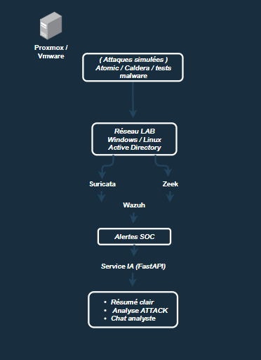

Je suis en train de monter un mini‑SOC dans mon homelab pour gagner de l’expérience et tester différents scénarios d’attaque. L’idée est de simuler des attaques, analyser les détections et expérimenter avec une petite couche IA, le tout sur une plateforme que je vais héberger sur Proxmox ou VMware.

← Back Home